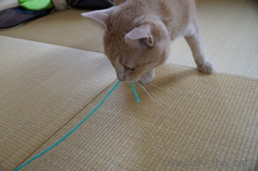
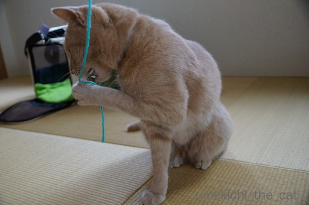
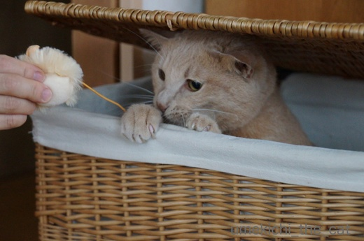
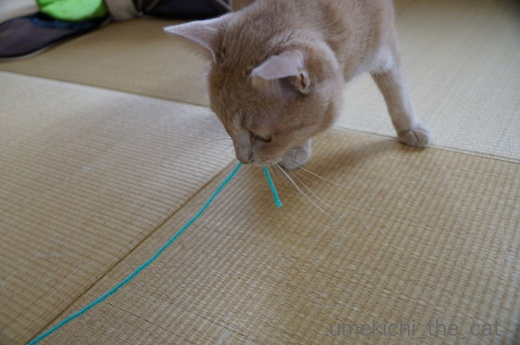
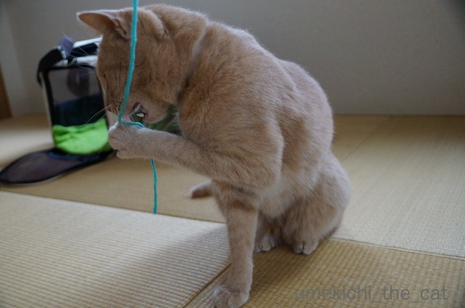
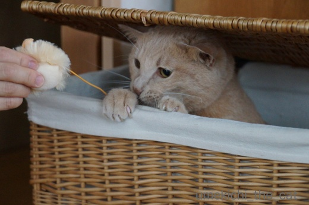

期待通りには行きません・・・ [梅吉]
楽しいだろうと毛糸をポンポンにしてみたら

ガン無視・・・

え？それでいいんですか？？

食いついたのは持ち手用のただのヒモ部分。

買ってきたネズミのおもちゃは本体ではなく
しっぽとしてついているただのゴムが良いらしい・・・

え〜〜〜〜〜？それ〜〜〜〜〜？？

遊んでくれないよりいいですけどね。

ねずみはそんな気がしましたがポンポンは絶対にウケると思ったのにー。
毛糸玉だと遊ぶんですよ。
梅吉の好み、まだまだ把握しきれてません。なんて奥深い・・・
 ↑ガブッと一押し↑
↑ガブッと一押し↑
我が家から歩いて３〜40分の距離にある植物園。
涼しい時期はウォーキングに最適なので良く行くのですが
暑い時期はちょっと足が遠のきがちです。
が、今年はハスを見に頑張っていって来ました。
ハスは午前中が見頃なのでお休みの日に早起きしなければなりません。
それも今まで見に行かなかった理由です^^;
大きい池に広がるハス。
仏教画の世界みたいです。ここで座禅組んだら悟りが開けるかな＾＾
ハスの花って優雅で美しいですよね。
あ、中国茶のお茶請けに出てくるハスの実の砂糖漬けも好きです。
実をとったあとドライフラワーにしたヘッド部分も飾り物として素敵。
とっても暑かったけれど睡蓮も見頃で清々しい気分になりました。
我が家のベランダではアスパラの花が咲いています。
気づいたら赤い実になってしまっていたのでちゃんとお花を見たのは初めてでした。

ガン無視・・・

え？それでいいんですか？？

食いついたのは持ち手用のただのヒモ部分。

買ってきたネズミのおもちゃは本体ではなく
しっぽとしてついているただのゴムが良いらしい・・・

え〜〜〜〜〜？それ〜〜〜〜〜？？

遊んでくれないよりいいですけどね。

ねずみはそんな気がしましたがポンポンは絶対にウケると思ったのにー。
毛糸玉だと遊ぶんですよ。
梅吉の好み、まだまだ把握しきれてません。なんて奥深い・・・
我が家から歩いて３〜40分の距離にある植物園。
涼しい時期はウォーキングに最適なので良く行くのですが
暑い時期はちょっと足が遠のきがちです。
が、今年はハスを見に頑張っていって来ました。
ハスは午前中が見頃なのでお休みの日に早起きしなければなりません。
それも今まで見に行かなかった理由です^^;
大きい池に広がるハス。
仏教画の世界みたいです。ここで座禅組んだら悟りが開けるかな＾＾
ハスの花って優雅で美しいですよね。
あ、中国茶のお茶請けに出てくるハスの実の砂糖漬けも好きです。
実をとったあとドライフラワーにしたヘッド部分も飾り物として素敵。
とっても暑かったけれど睡蓮も見頃で清々しい気分になりました。
我が家のベランダではアスパラの花が咲いています。
気づいたら赤い実になってしまっていたのでちゃんとお花を見たのは初めてでした。

カフェオレ色の梅吉

梅吉 2023年8月10日 永眠


梅吉と出会った譲渡会

犬猫の理由なき殺処分ゼロ
妄想広告
UMEKICHI 光

爆発的に早い！
時々攻撃的！
Thanks to Mr.Boss365
爆発的に早い！
時々攻撃的！
Thanks to Mr.Boss365

オモチャ本体よりゴムやヒモ、猫あるあるですね(*^▽^*)
梅吉さんが飛び出すビックリ箱、欲しいです♪
こてつはダイソーネズミがお気に入り、噛みついてグイグイ口の中へ押し込みます。食べるつもりなんでしょうか・・・^^;
ハスを見に行かない、いや行けない理由、同じです。
ハスの葉っぱで飲むお酒、挑戦されましたか？？
by ゆきち (2017-07-07 15:07)
ポンポンを一生懸命作ったのに
梅吉さんったら（笑
ヒモが大好きなのですね♪
遊ぶ姿も可愛いです(#^.^#)
by きぃ (2017-07-07 15:33)
ゴムやひも好きですよね～。メインじゃないところに興味を持つんですよね"(-""-)"
by palpal (2017-07-07 16:04)
梅吉さんってばｗ
うちのノエルもぼんぼんよりも紐が好きで、ニケはネズミを捕まえると
シッポをあぐあぐします^^;
なので、最近はスズラン紐をじゃらしの柄にくくりつけて振り回して遊んでます(^O^)→かみさんがｗ
by ニッキー (2017-07-07 16:08)
籠から手を出すしぐさが可愛いです。
ひょろひょろしたものがお気に入りなんですね(^^♪。
by riverwalk (2017-07-07 20:23)
反れば選りますね。絶対食い付くと思いきや裏切られることは多々あります。
by みぃにゃん (2017-07-07 20:26)
むむむ。
梅吉さんの「やる気（遊ぶ気？）スイッチ」がどこにあるのか。。。
でもそれを探すのも楽しいですね。^^)
ハスの見ごろが午前中とは知りませんでした。
by yes_hama (2017-07-07 21:57)
紐はネズミのしっぽに見えて、本能でしょうか（笑）
面白い、ニャンさんのあるあるですね。
ハスの花、一度だけたくさんの満開を見たことがありました。
ひなびたお寺の古い池でした。
ハスの花、自然はタイミングが難しいですね。
by kiki (2017-07-07 21:57)
猫あるあるですねｗｗ
うちもメインのネズミさんなのに
ネズミさんが繋がってる紐に食いついたりしますしｗｗｗ
by sumi-cyan (2017-07-07 23:49)
ちぃさん、お久しぶりです＾＾
早速コメントありがとうございました。m(__)m
やっと落ち着いてきたので、梅吉さんの妖怪顔が見たくなって
真っ先に梅吉さんに会いに来ました( ´艸｀)
梅吉さん相変わらずおもしろいし可愛い♪
梅吉さんはお引越しの時大丈夫でしたか？
うちは大変でした。
記事アップしたのでお時間があったらご訪問くださいませ。
またボチボチ復活しますのでよろしくお願いします。
by Moon (2017-07-08 06:02)
我が家にもヒモ好きニャンコが居まして
遊ぶだけじゃなくて食べちゃうので困ります＾＾；
by ぽちの輔 (2017-07-08 06:48)
こだわるオトコ、梅吉さん♡ すてき〜♡
ウチも、昔は、ネズミのおもちゃを出すと、速攻でしっぽ食いちぎって
食べられちゃうので、最初から切ってお出ししていました。。
梅吉さんだと、それじゃ遊んでいただけないのね〜(+_;)
by のらん (2017-07-08 07:41)
梅吉くんにも好みがあるんですね～。
by 暁烏 英（あけがらす ひで） (2017-07-08 12:14)
わかる～。
良かれと作ったポンポンもひも部分だけあれば十分ｗ
人が捨てようとしていた、チョコレートの包みを無造作に丸めたものが
人気だったり。
でも、これもはずれだよ～～っ！も楽しかったりするんだよね(^-^)
タラは、遊びたくなると猫じゃらしを銜えて持ってきては
「なぁ～～」って、催促するの。・・・って書いてたら
うそ～。廊下から鳴いてる声が迫ってくる。
猫じゃらし銜えたタラが来たよ～ｗ
by emi (2017-07-08 16:37)
梅吉くんの首輪、涼しげな色でいいなぁ～♪
by yuppie (2017-07-08 16:40)
ポンポンよりただの毛糸、ねずみより持ち手のゴム…これらから導き出されるものは…ううううーん！ぽんっ！もしかして、ネズミやポンポンが持ち手で、ヒモ部分がオモチャだと思ってますねっ！
私的には籐籠から飛び出す梅吉君のほうが、可愛いビックリ箱みたいですが。
一面のハス、極楽浄土みたいですね(ザックリした感想
ちぃさんが早起きしたお陰で、ええもんみしてもらえましたわあ(合掌
by BillK-ko (2017-07-08 18:46)
刺し色も同系色も、とってもフォトジェニック！
by Ginger (2017-07-08 21:51)
ハスの花、いいですよね。
私も見に行ってみたいのですが、
やはりそこまで近くにはないので、
始発なみの早起きが必要で…^^;
by ふにゃいの (2017-07-08 22:52)
梅吉さんたら～(T_T)
成猫はオモチャ難しいですよねー。どの子も遊ぶのがカシャブンかな(≧∇≦)
仔猫はオモチャ楽しいほど遊んでくれるので、今まで買ったのも無駄じゃなかったーと感激しております（笑）
梅干しは、２キロが漬けやすいかも。私は今年は14キロです。母や兄弟におすそ分けです。
by ミミハナ (2017-07-08 23:37)
ゆきちさん＞今回買って来たのは2コで100円のダイソーネズミです。
こてつくんとお揃いかな＾＾
ハスの葉っぱで飲み物、ジュースしかない様でしたよ。
炎天下でぐいぐい飲んで厄介なことになる大人を
警戒しての事なんでしょうか (^▽^;)
きぃさん＞一生懸命巻き巻きしたのに報われませんでした(꒦ິ⌑꒦ີ)
この後２〜３巻きしただけのショボいポンポンには食いついたんですよ〜。
わからないわぁ・・・・
palpalさん＞きなこちゃんはゴム好きね♡
メインじゃない渋い（？）脇役に興味を持つとは
猫にもマニア体質ってあるのかしらね〜＾＾
ニッキーさん＞ノエルさんもニケさんも細長いもん好き〜＾＾
スズラン紐は私も時々やってます！
おもちゃもローテを組まないと飽きられちゃうので大変です(^▽^;)
riverwalkさん＞はい。細長もん好きですね＾＾
分かっちゃいるのですが他のものも楽しいんじゃないか、
と色々試したくなる親ばか飼い主です (^▽^;)
遊んで欲しくなると自ら籠に入っていくことが・・・
籠の中からわくわくしている空気が伝わってくるので
ついつい構わずにはいられません(≧▽≦)
みぃにゃんさん＞毎日裏切られまくりですね・・・
それそれが快感だったりする猫変態です(^▽^;)
yes_hamaさん＞やる気スイッチは日々、いえ、刻々と変わるので
飼い主も遊ぶときは真剣に向き合わねばなりません(｀_´)ゞ
スイッチを探し当てたときはガッツポ〜！！
ハスの花はお昼過ぎには閉じてしまうんですよー。
kikiさん＞ネズミなんて見たとこ無いのにその辺は
やっぱり本能なんでしょうね＾＾
・・・って、そう思うとしっぽゴム、急に気持ち悪くなってきました(^▽^;)
ハスの花が咲く時期は日中暑くて炎天下にはいられないので
「涼しい午前中に見てや〜」と自然の摂理なのかもしれません。
sumi-cyanさん＞紐だけで遊ばせても良い様なものですが
何かつけたくなっちゃうのが親心・飼い主ごころですよね〜＾＾
Moonさん＞お帰りなさい＾＾
改めて引越しお疲れ様でした〜。
私はこの家に引っ越してから梅吉を迎えたので
梅吉は引越し知らずです。
もしこれから引越しをするとすると・・・
梅吉を引越しの間どうするのか、考えただけでぐったりです(^▽^;)
ぽちの輔さん＞ヒモなんて食べても美味しくないのに〜(⌒_⌒;
うちはゴム・シリコン系のパッキンが大好きですぐにキリキリと
噛み砕いてしまいます。
製氷用の給水機、麦茶を作るボトル、水筒・・・と我が家には
パッキンなしで本来の役目をこなせるのか怪しいものがたくさんありますww
by ちぃ (2017-07-09 15:16)
のらんさん＞大雑把なくせにこだわりの漢、梅吉です＾＾
ネズミのおもちゃのおしっぽに食いつくにゃんこさん
割と多いのですね〜。
もしかしたら野生のみなにゃんはその部分から・・・・きゃ〜Σ(ﾟ◇ﾟ；)
暁烏 英さん＞こだわりがない様に見えて意外にこだわります(^▽^;)
でもフードはなんでもウェルカム！
普通は旧フード新フードをまぜ、
少しずつ新フードの割合を多くして行くのですが
梅吉はいきなり全新フードでもOKです(≧艸≦)
この辺りは飼い主としては大助かりです・・・いやしいなんて言わないで〜。
emiさん＞そうそう！包み紙を捨てようと丸めていたら
お目目キラキラして走ってくる時がありますよね＾＾
梅吉はDMとか包装してくるビニール袋が大好きです。
元手0！！(^▽^;)
タラさん、自らジャラシを銜えて来るなんてなんて可愛いんでしょう！
それは無視できません！
もう腕がちぎれるくらい振り回して差し上げて〜(^_－)☆
by ちぃ (2017-07-09 17:09)
梅吉君も、ごくごく普通の紐が好きなのね(笑)
うちも、「え！食いつくのそっち？」って言っちゃいますよｗｗ
朝早いうちに蓮を観たいな〜って思うけど
早起きできなくて、やっぱり毎年見逃してます^^;
by リュカ (2017-07-09 17:26)
yuppieさん＞お目にとまりましたか＾＾
私の好きな配色なので梅吉の意向聞かずに買っちゃいましたー。
BillK-koさん＞なるほど！
ネズミやポンポン部分の方が持ちやすいからねっＯ(≧▽≦)Ｏ
たま〜にネズミやポンポン部分をかみかみしてべとべとにした後に
「あそんでや〜」と持って来るのはさらに手が滑らない様に
持ちやすく湿らせてくれているんですね・・・・・ぎゃ〜
ビックリ箱は時々噛み付いても来るのでドキドキ感がすごいですよ〜(^_－)☆
ハスの花いっときの清涼感になったでしょうか？
水辺だから蚊がすごかったのは写真ではお伝え出来ませんでしたww
御釈迦様って悟りの境地で蚊にも刺されなかったのかしら・・・・・
Gingerさん＞毛糸の色は梅吉の首輪の一色を採って見ました〜。
ねずみのしっぽの同系色は思わぬコラボ！でした＾＾
ふぃにゃいのさん＞あああ、始発は辛いですね・・・(^▽^;)
私は葉っぱが大きくて人が乗れそうな「オオオニバス」を
見てみたいと思っているのですがこちらは早起きレベルではなく
海外に行かないとみられない様です・・・残念！
ミミハナさん＞なんでも食いついて来る子猫、良いですねーＯ(≧▽≦)Ｏ
オモチャじゃなくても手や足にもじゃれついてきますよね＾＾
梅吉もちょっと前まで「はぁはぁ」言うまでじゃれついて走っていたんだけど
すっかりセーブすることを覚えてしまって・・・ (^▽^;)
梅干しは2Kgが漬けやすいのね・・・_φ(･_･
今からリサーチして来年に備えようかしら・・・・
一回漬けてウンチクを語りたくなったらお話聞いてねー＾＾
リュカさん＞もうつまんないくらい普通の紐が好きー！
パジャマのズボンのヒモで遊ばれてもブログ映えしないんだけど・・・
気にしないでアップしちゃうけどね(^_－)☆
東京で近場だったら不忍池とかでしょうか？
冬場よりも夏場の早起きの方がなぜか辛いよね（私だけ？
by ちぃ (2017-07-09 20:53)
予想を超えたポイントに行きました！
まさかの紐だとは・・・(*´艸`)
紐の暖簾とかかけたら喜びそう！
by muku (2017-07-10 09:48)
ネコ様、あるある～♪
ホントに、それでイイんですかっ！と何度、私もあきれたことか（苦笑）
期待を裏切るのも、お仕事らしいですね(^^♪
ところで、アスパラの花って、こんな可憐なんですね。
園芸店で、アスパラの苗と書かれていたけれど、
どう見ても、泥ヒモに見えたことを思い出しました。
確か、数年待たなきゃいけないけど、
出始めればニョキニョキ出るとか、出ないとか？？ うぅ、楽しそう♡
by morichan (2017-07-10 12:20)
mukuさん＞そう！紐、なんですよ〜(*´艸`)
紐の暖簾、おもちゃとしてはとっても喜んでもらえそうですが
飛びついて飛びついてあっという間に破壊されそうです・・・・
ついでに家も・・・・・
morichanさん＞梅吉はとっても仕事熱心なので
たくさん期待を裏切ってくれます・・・(=_=;)
アスパラの苗はちょっと買うのをためらうレベルの見てくれですよね。
まるでミミズを括ったような・・・・きゃーーーーーーー！！！！
秋に植えて翌年春には育って来るのですが
初年度のアスパラはとっても細いです。ストローくらい。
初めの10本ぐらいは細いながらも採って食べていましたが
（ちゃんとアスパラの味！しかも美味しいのですよ！！）
その後は株を太らせるため収穫せず大きくしました。
花が終わったあと実を生らせてしまうと株が太れないらしいので
摘んでしまおうと思っています。
さて、来春はストローより太いアスパラが収穫できるのか・・・
今から楽しみで〜す♪
by ちぃ (2017-07-10 14:36)